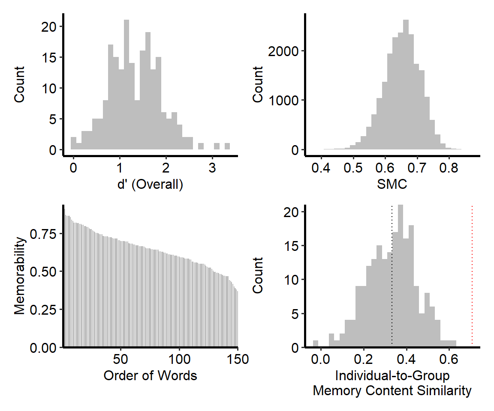
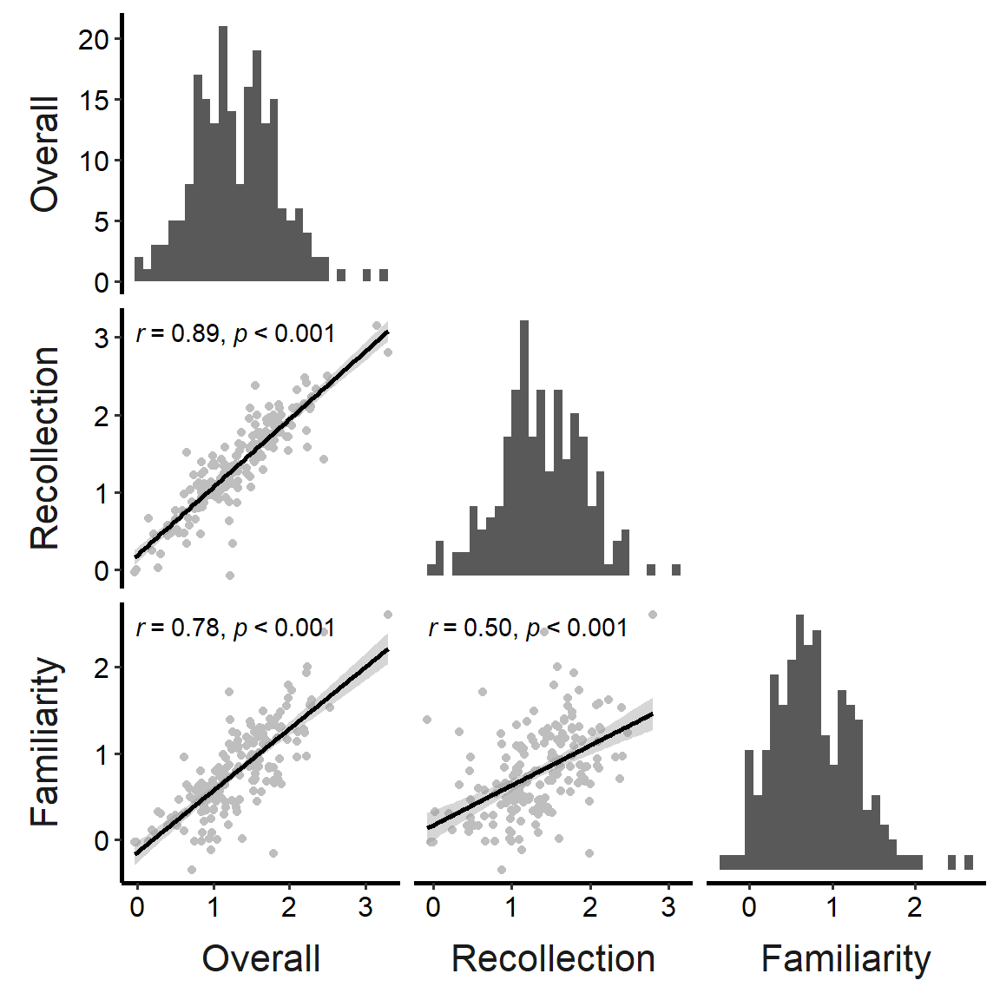
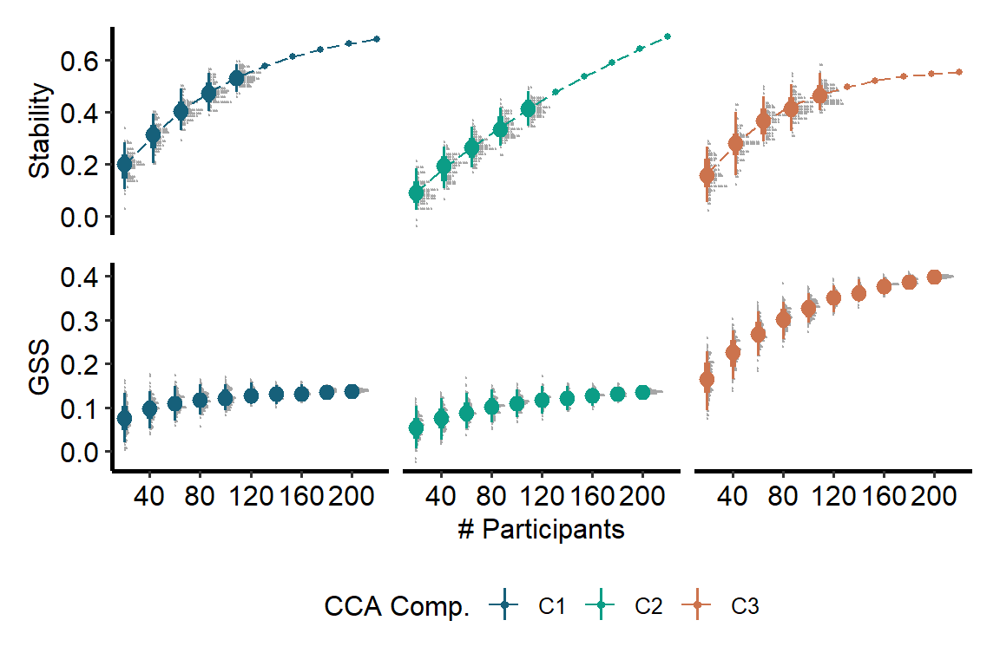
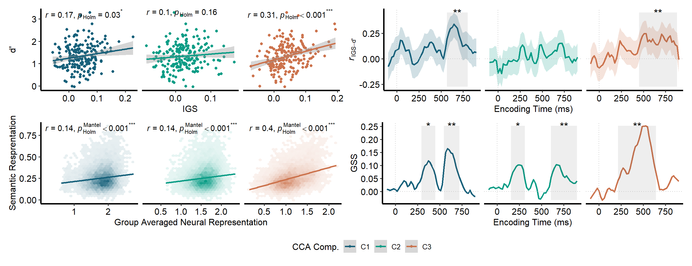
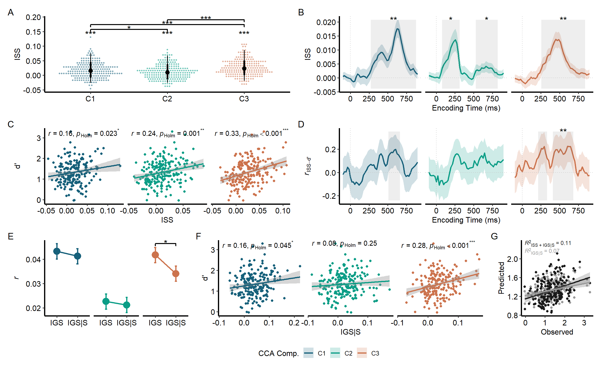
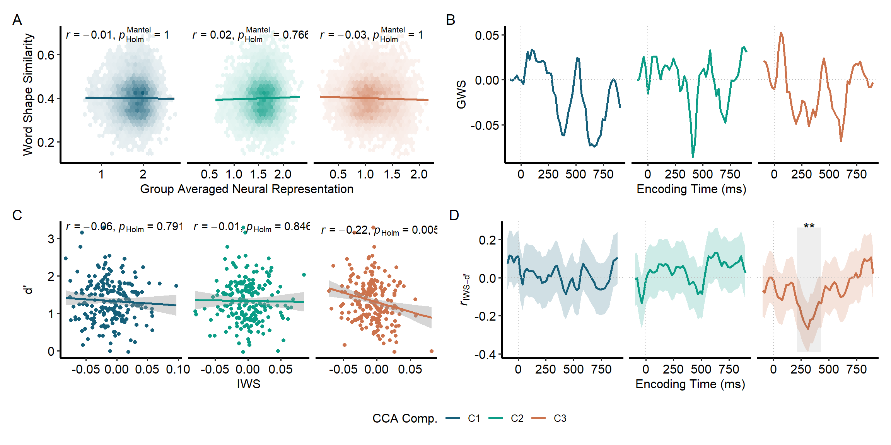
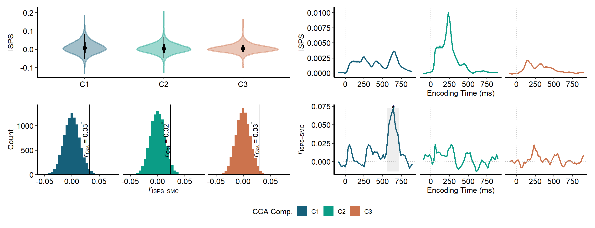
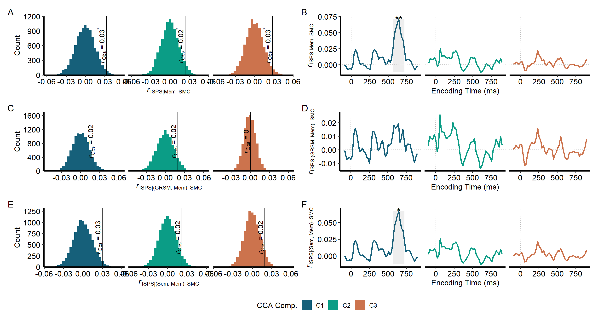
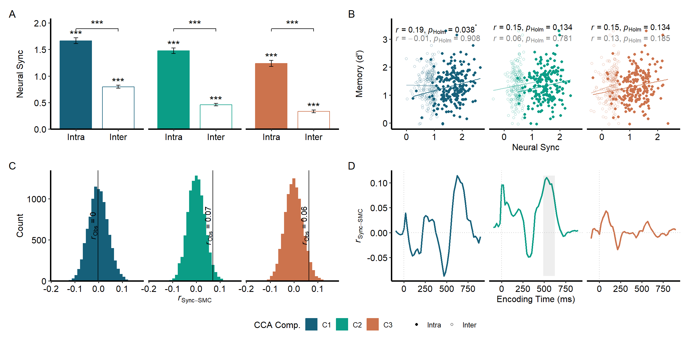

Code
library(tidyverse)
library(patchwork)Liang Zhang
Jintao Sheng
colors_components <- c("#16607a", "#0b9d86", "#cc734d")
size_label <- 5
index_time <- function(time_id, onset = 51, sampling_rate = 256) {
(time_id - onset) / sampling_rate * 1000
}
fit_curve <- function(x, y) {
nls(
y ~ eta1 * (1 - exp(theta - eta2 * x)),
start = list(eta1 = 1, eta2 = 0.01, theta = 0)
)
}
prepare_corr_plotmath <- function(stats,
col_r = "estimate",
col_p = "p.value",
name_r = "italic(r)",
name_p = "italic(p)[Holm]") {
stats |>
rstatix::adjust_pvalue(col_p, "p_adj") |>
rstatix::add_significance(
"p_adj", "p_adj_sig",
cutpoints = c(0, 0.001, 0.01, 0.05, 1),
symbols = c("***", "**", "*", "")
) |>
mutate(
label = format_r_plotmath(
.data[[col_r]], p_adj,
p.sig = p_adj_sig,
name_r = name_r,
name_p = name_p
)
)
}
format_r_plotmath <- function(r, p,
p.sig = "",
name_r = "italic(r)",
name_p = "italic(p)[Holm]") {
paste0(
str_glue("{name_r}*' = '*{round(r, 2)}"),
if (is.null(name_p)) {
str_glue("^'{p.sig}'")
} else {
paste0(
"*', '*",
if_else(
p < 0.001,
str_glue("{name_p} < 0.001^'{p.sig}'"),
str_glue("{name_p}*' = '*{round(p, 3)}^'{p.sig}'")
)
)
}
)
}
visualize_scatter <- function(data, mem_perf, lab_stat, col_stat,
show_legend = FALSE) {
data_joind <- data |>
left_join(mem_perf, by = "subj_id") |>
mutate(cca_id = factor(cca_id))
stats <- data_joind |>
reframe(
cor.test(.data[[col_stat]], .data$dprime) |>
broom::tidy(),
.by = cca_id
) |>
prepare_corr_plotmath()
data_joind |>
ggplot(aes(.data[[col_stat]], dprime)) +
geom_point(aes(color = cca_id), show.legend = show_legend) +
geom_smooth(
aes(color = cca_id),
method = "lm",
formula = y ~ x,
show.legend = show_legend
) +
geom_text(
aes(x = min(data_joind[[col_stat]]), y = Inf, label = label),
stats,
hjust = 0,
vjust = 1,
parse = TRUE
) +
facet_grid(cols = vars(cca_id), scales = "free") +
scale_x_continuous(name = lab_stat) +
scale_y_continuous(name = "d'") +
scale_color_components() +
theme(axis.line = element_line(linewidth = 1), strip.text = element_blank())
}
visualize_mantel <- function(patterns_x, patterns_y, stats, name_x, name_y,
show_legend = FALSE) {
patterns_flat <- patterns_x |>
mutate(
pattern = map(
pick(last_col())[[1]],
\(pat) tibble(
"{name_x}" := unclass(pat),
"{name_y}" := unclass(patterns_y)
)
),
.keep = "unused"
) |>
unnest(pattern)
patterns_flat |>
ggplot(aes(.data[[name_x]], .data[[name_y]])) +
geom_hex(
aes(fill = factor(cca_id), alpha = after_stat(count)),
show.legend = FALSE
) +
geom_smooth(
aes(color = factor(cca_id)),
method = "lm",
formula = y ~ x,
show.legend = show_legend
) +
geom_text(
aes(x = min(patterns_flat[[name_x]]), y = Inf, label = label),
prepare_corr_plotmath(
stats, "statistic",
name_p = "italic(p)[Holm]^{Mantel}"
),
hjust = 0, vjust = 1, parse = TRUE
) +
facet_grid(cols = vars(cca_id), scales = "free") +
scale_x_continuous(name = name_x) +
scale_y_continuous(name = name_y) +
scale_color_components(aesthetics = c("color", "fill")) +
theme(
strip.text = element_blank(),
axis.line = element_line(linewidth = 1)
)
}
visualize_mantel_dist <- function(data, stats, label, show_legend = FALSE) {
data |>
mutate(
cca_id = factor(cca_id),
null = map(mantel, "perm"),
.keep = "unused"
) |>
unchop(null) |>
ggplot(aes(null)) +
geom_histogram(aes(fill = cca_id), show.legend = show_legend) +
geomtextpath::geom_textvline(
aes(xintercept = statistic, label = label),
stats |>
mutate(cca_id = factor(cca_id)) |>
prepare_corr_plotmath(
"statistic",
name_r = "italic(r)[Obs]",
name_p = NULL
),
parse = TRUE,
vjust = -0.1
) +
facet_grid(cols = vars(cca_id)) +
scale_x_continuous(name = label) +
scale_y_continuous(name = "Count", expand = expansion(mult = c(0, 0.05))) +
scale_color_components(aesthetics = "fill") +
theme(
axis.line = element_line(linewidth = 1),
strip.text = element_blank(),
strip.background = element_blank()
)
}
visualize_dynamic <- function(stats,
clusters_stats = NULL,
col_stat = "estimate",
lab_stat = "Estimate",
col_cis = c("conf.low", "conf.high"),
limits = NULL,
show_legend = FALSE) {
if (!is.null(clusters_stats)) {
clusters_stats <- clusters_stats |>
mutate(cca_id = factor(cca_id)) |>
rstatix::adjust_pvalue("p_perm") |>
rstatix::add_significance(
"p_perm.adj",
cutpoints = c(0, 0.001, 0.01, 0.05, 1),
symbols = c("***", "**", "*", "")
) |>
filter(p_perm < 0.05)
}
show_cis <- !is.null(col_cis) && all(has_name(stats, col_cis))
limits_rect <- if (show_cis) {
range(c(stats[[col_cis[1]]], stats[[col_cis[2]]]))
} else {
range(stats[[col_stat]])
}
stats |>
mutate(
cca_id = factor(cca_id),
time = index_time(time_id)
) |>
ggplot(aes(time, .data[[col_stat]])) +
geom_line(
aes(color = cca_id),
linewidth = 1,
show.legend = show_legend
) +
# TODO: Convert these as functions
{
if (show_cis) {
geom_ribbon(
aes(
fill = cca_id,
ymin = .data[[col_cis[1]]],
ymax = .data[[col_cis[2]]]
),
alpha = 0.2,
show.legend = show_legend
)
}
} +
{
if (!is.null(clusters_stats)) {
list(
geom_rect(
data = clusters_stats,
mapping = aes(
xmin = index_time(start),
xmax = index_time(end),
ymin = limits_rect[1],
ymax = limits_rect[2]
),
inherit.aes = FALSE,
alpha = 0.1
),
geom_text(
data = clusters_stats,
mapping = aes(
x = index_time((start + end) / 2),
y = limits_rect[2],
label = p_perm.adj.signif
),
size = size_label,
inherit.aes = FALSE
)
)
}
} +
facet_grid(cols = vars(cca_id)) +
geom_hline(yintercept = 0, linetype = "dotted", color = "grey") +
geom_vline(xintercept = 0, linetype = "dotted", color = "grey") +
scale_x_continuous(name = "Encoding Time (ms)") +
scale_y_continuous(name = lab_stat, limits = limits) +
scale_color_components(aesthetics = c("color", "fill")) +
theme(
strip.text = element_blank(),
strip.background = element_blank(),
axis.line = element_line(linewidth = 1)
)
}
scale_color_components <- function(...) {
scale_color_manual(
name = "CCA Comp.",
values = colors_components,
labels = \(x) paste0("C", x),
...
)
}
theme_set(ggpubr::theme_pubr(base_family = "Gill Sans MT", base_size = 12))p_perf <- targets::tar_read(mem_perf) |>
ggplot(aes(dprime)) +
geom_histogram(fill = "grey") +
scale_x_continuous(name = "d' (Overall)") +
scale_y_continuous(name = "Count") +
theme(axis.line = element_line(linewidth = 1))
p_smc <- targets::tar_read(smc) |>
enframe() |>
ggplot(aes(value)) +
geom_histogram(fill = "grey") +
scale_x_continuous(name = "SMC") +
scale_y_continuous(name = "Count") +
theme(axis.line = element_line(linewidth = 1))
p_memorability <- targets::tar_read(memorability) |>
filter(word_id <= 150) |>
mutate(
trial_id_new = as.integer(fct_reorder(factor(trial_id), desc(pc)))
) |>
ggplot(aes(trial_id_new, pc)) +
geom_col(fill = "grey", width = 0.8) +
scale_x_continuous(name = "Order of Words", expand = c(0, 0)) +
scale_y_continuous(name = "Memorability", expand = c(0, 0)) +
theme(axis.line = element_line(linewidth = 1))
p_memorability_content <- targets::tar_read(memorability_content) |>
ggplot(aes(r)) +
geom_histogram(fill = "grey") +
geom_vline(
xintercept = mean(targets::tar_read(memorability_content)$r),
linetype = "dotted"
) +
geom_vline(xintercept = sqrt(0.5), linetype = "dotted", color = "red") +
scale_x_continuous(
name = "Individual-to-Group\nMemory Content Similarity"
) +
scale_y_continuous(name = "Count", expand = expansion(c(0, 0))) +
theme(axis.line = element_line(linewidth = 1))
p_perf + p_smc + p_memorability + p_memorability_content
targets::tar_read(mem_perf) |>
left_join(
targets::tar_read(mem_perf_precise),
by = "subj_id"
) |>
select(!subj_id) |>
rename(
Overall = dprime,
Recollection = dprime_rem,
Familiarity = dprime_know
) |>
GGally::ggpairs(
diag = list(continuous = "barDiag"),
lower = list(
continuous = function(data, mapping, ...) {
ggplot(data, mapping) +
geom_point(color = "grey") +
geom_smooth(method = "lm", color = "black") +
ggpmisc::stat_correlation(
ggpmisc::use_label(c("r", "p.value")),
small.r = TRUE,
small.p = TRUE
)
}
),
upper = "blank",
switch = "both"
) +
theme(
axis.line = element_line(linewidth = 1),
strip.text = element_text(size = 16),
strip.background = element_blank(),
strip.placement = "outside"
)
This is supplementary figure showing the stability.
targets::tar_load(patterns_group_stability)
size_subjs <- seq(20, 200, by = 20)
predictions <- patterns_group_stability |>
reframe(
fit_curve(size, r) |>
predict(newdata = data.frame(x = size_subjs)) |>
as_tibble_col("r") |>
add_column(size = size_subjs, .before = 1L),
.by = cca_id
)
p_stability <- patterns_group_stability |>
ggplot(aes(size, r, color = factor(cca_id))) +
ggdist::stat_dotsinterval() +
geom_point(aes(size, r), predictions, size = 1) +
geom_line(aes(size, r), predictions, linetype = "longdash") +
scale_x_continuous(name = "# Participants", breaks = scales::breaks_width(40)) +
scale_y_continuous(name = "Stability") +
scale_color_components() +
facet_grid(cols = vars(cca_id), scales = "free") +
theme(axis.line = element_line(linewidth = 1), strip.text = element_blank())
p_trend_gss <- targets::tar_read(data_gss_whole_resampled) |>
ggplot(aes(size, gss, color = factor(cca_id))) +
ggdist::stat_dotsinterval() +
scale_x_continuous(name = "# Participants", breaks = scales::breaks_width(40)) +
scale_y_continuous(name = "GSS") +
scale_color_components(guide = "none") +
facet_grid(cols = vars(cca_id), scales = "free") +
theme(
axis.line = element_line(linewidth = 1),
strip.text = element_blank()
)
p_stability / p_trend_gss +
plot_layout(guides = "collect", axes = "collect") &
theme(legend.position = "bottom")
This is Figure 2 now.
# IGS predicts memory ----
p_igs_mem <- visualize_scatter(
targets::tar_read(data_igs_whole),
targets::tar_read(mem_perf),
lab_stat = "IGS",
col_stat = "igs",
show_legend = TRUE
)
p_igs_mem_dynamic <- visualize_dynamic(
targets::tar_read(stats_igs_mem_dynamic),
targets::tar_read(clusters_stats_igs_mem_dynamic),
lab_stat = expression(italic(r)[IGS - "d'"])
)
# semantics related to group pattern (not shape) ----
p_gss_whole <- visualize_mantel(
targets::tar_read(patterns_group_whole),
targets::tar_read(pattern_semantics),
targets::tar_read(stats_gss_whole),
"Group Averaged Neural Representation",
"Semantic Resprentation"
)
p_gss_dynamic <- visualize_dynamic(
targets::tar_read(stats_gss_dynamic),
targets::tar_read(clusters_stats_gss_dynamic),
col_stat = "statistic",
lab_stat = "GSS"
)
(p_igs_mem | p_igs_mem_dynamic) /
(p_gss_whole | p_gss_dynamic) +
plot_layout(guides = "collect") &
# plot_annotation(tag_levels = "A") &
theme(legend.position = "bottom")
Semantic information is important but non-semantic information is also important.
This will be Figure 3.
stats_iss_whole <- targets::tar_read(stats_iss_whole) |>
rstatix::adjust_pvalue() |>
rstatix::add_significance(
cutpoints = c(0, 0.001, 0.01, 0.05, 1),
symbols = c("***", "**", "*", "")
) |>
add_column(y = 0.13, .after = 1L)
iss_comparison <- targets::tar_read(iss_comparison) |>
filter(adj.p.value < 0.05) |>
mutate(
across(c(start, end), \(x) factor(x, levels = 1:3)),
y_position = 0.14 * (1 + 0.12 * seq_len(n()))
) |>
rstatix::add_significance(
"adj.p.value",
cutpoints = c(0, 0.001, 0.01, 0.05, 1),
symbols = c("***", "**", "*", "")
)
p_iss_dist <- targets::tar_read(data_iss_whole) |>
mutate(cca_id = factor(cca_id)) |>
ggplot(aes(cca_id, iss)) +
ggdist::stat_dotsinterval(
aes(slab_color = cca_id, slab_fill = cca_id),
slab_alpha = 0.4,
side = "both"
) +
geom_text(
aes(cca_id, y, label = p.value.adj.signif),
stats_iss_whole,
size = size_label,
vjust = 0,
inherit.aes = FALSE
) +
ggsignif::geom_signif(
aes(
xmin = start, xmax = end,
annotations = adj.p.value.signif,
y_position = y_position
),
iss_comparison,
size = 0.8,
textsize = size_label,
vjust = 0.5,
inherit.aes = FALSE,
manual = TRUE
) +
scale_x_discrete(name = NULL, labels = \(x) paste0("C", x)) +
scale_y_continuous(name = "ISS") +
scale_color_components(
aesthetics = c("slab_color", "slab_fill"),
guide = "none"
) +
theme(axis.line = element_line(linewidth = 1))
p_iss_dynamic <- visualize_dynamic(
targets::tar_read(stats_iss_dynamic),
targets::tar_read(clusters_stats_iss_dynamic),
col_stat = "estimate",
lab_stat = "ISS",
show_legend = TRUE
)
p_iss_mem_scatter <- visualize_scatter(
targets::tar_read(data_iss_whole),
targets::tar_read(mem_perf),
lab_stat = "ISS",
col_stat = "iss"
)
p_iss_mem_dynamic <- visualize_dynamic(
targets::tar_read(stats_iss_mem_dynamic),
targets::tar_read(clusters_stats_iss_mem_dynamic),
col_stat = "estimate",
lab_stat = expression(italic(r)[ISS - "d'"])
)targets::tar_load(igs_comp_partial)
mult <- 1
stats <- igs_comp_partial$stats |>
mutate(
ymax = estimate + mult * std.error,
ymin = estimate - mult * std.error
)
htests <- igs_comp_partial$htest |>
separate_wider_delim(
contrast,
" - ",
names = c("start", "end")
) |>
rstatix::add_significance(
"p.value",
cutpoints = c(0, 0.001, 0.01, 0.05, 1),
symbols = c("***", "**", "*", "")
) |>
mutate(y_position = max(stats$ymax)) |>
filter(p.value < 0.05)
p_compare_igs_partial <- stats |>
ggplot(aes(type, estimate, ymax = ymax, ymin = ymin, color = cca_id)) +
geom_point(size = size_label) +
geom_errorbar(width = 0.1, linewidth = 1) +
geom_line(aes(group = cca_id), linewidth = 1) +
ggsignif::geom_signif(
aes(
xmin = start, xmax = end,
annotations = p.value.signif,
y_position = y_position
),
htests,
size = 0.8,
textsize = size_label,
vjust = 0.5,
inherit.aes = FALSE,
manual = TRUE
) +
facet_grid(cols = vars(cca_id), scales = "free") +
scale_x_discrete(name = NULL, labels = c("IGS", "IGS|S")) +
scale_y_continuous(name = expression(italic(r))) +
scale_color_components(guide = "none") +
theme(
strip.text = element_blank(),
strip.background = element_blank(),
axis.line = element_line(linewidth = 1)
)
p_igs_partial_scatter <- visualize_scatter(
targets::tar_read(data_igs_partial_whole),
targets::tar_read(mem_perf),
lab_stat = "IGS|S",
col_stat = "igs"
)
targets::tar_load(c(lm_mem_igs_partial, lm_mem_iss_igs_partial))
preds <- bind_rows(
`IGS|S` = lm_mem_igs_partial$pred,
`ISS + IGS|S` = lm_mem_iss_igs_partial$pred,
.id = "model"
) |>
mutate(model = factor(model, c("ISS + IGS|S", "IGS|S")))
model_eval <- tibble(
x = min(preds$obs),
y = max(preds$pred) * (1 + c(0.1, 0.02)),
model = factor(c("ISS + IGS|S", "IGS|S")),
r_squared = c(
caret::getTrainPerf(lm_mem_iss_igs_partial)$TrainRsquared,
caret::getTrainPerf(lm_mem_igs_partial)$TrainRsquared
) |>
signif(2)
)
p_compare_predictions <- preds |>
ggplot(aes(obs, pred, color = model)) +
geom_point(shape = 16) +
geom_smooth(method = "lm") +
ggtext::geom_richtext(
aes(
x, y,
color = model,
label = paste0(
"*R*<sup>2</sup><sub>",
model, "</sub> = ",
r_squared
)
),
model_eval,
size = 3,
fill = NA, label.color = NA, # remove background and outline
label.padding = grid::unit(rep(0, 4), "pt"), # remove padding
hjust = 0, vjust = 0.5, # bottom-left corner
inherit.aes = FALSE,
show.legend = FALSE
) +
# facet_grid(cols = vars(model)) +
scale_x_continuous(name = "Observed") +
scale_y_continuous(name = "Predicted") +
scale_color_grey(start = 0.1, end = 0.6, name = "Model", guide = "none") +
theme(strip.background = element_blank(), axis.line = element_line(linewidth = 1))
p_gfs_whole <- visualize_mantel(
targets::tar_read(patterns_group_whole),
targets::tar_read(pattern_shapes),
targets::tar_read(stats_gfs_whole),
"Group Averaged Neural Representation",
"Word Shape Similarity"
)
p_gfs_dynamic <- visualize_dynamic(
targets::tar_read(stats_gfs_dynamic),
targets::tar_read(clusters_stats_gfs_dynamic),
col_stat = "statistic",
lab_stat = "GWS",
show_legend = TRUE
)
p_ifs_mem_whole <- visualize_scatter(
targets::tar_read(data_ifs_whole),
targets::tar_read(mem_perf),
lab_stat = "IWS",
col_stat = "iss"
)
p_ifs_mem_dynamic <- visualize_dynamic(
targets::tar_read(stats_ifs_mem_dynamic),
targets::tar_read(clusters_stats_less_ifs_mem_dynamic),
col_stat = "estimate",
lab_stat = expression(italic(r)[IWS - "d'"])
)
(p_gfs_whole | p_gfs_dynamic) /
(p_ifs_mem_whole | p_ifs_mem_dynamic) +
plot_layout(guides = "collect") &
plot_annotation(tag_levels = "A") &
theme(legend.position = "bottom")
p_isps_dist <- targets::tar_read(data_isps_whole) |>
mutate(cca_id = factor(cca_id)) |>
unnest(isps) |>
ggplot(aes(cca_id, isps)) +
ggdist::stat_slabinterval(
aes(slab_color = cca_id, slab_fill = cca_id),
slab_alpha = 0.4,
side = "both"
) +
geom_hline(
aes(yintercept = isps_baseline),
targets::tar_read(summary_isps_whole_permuted) |>
summarise(isps_baseline = mean(isps_mean), .by = cca_id) |>
mutate(cca_id = factor(cca_id)),
linetype = "dotted"
) +
scale_x_discrete(name = NULL, labels = \(x) paste0("C", x)) +
scale_y_continuous(name = "ISPS") +
scale_color_components(
aesthetics = c("slab_color", "slab_fill"),
guide = "none"
) +
theme(axis.line = element_line(linewidth = 1))
# p_isps_dynamic <- visualize_dynamic(
# targets::tar_read(stats_isps_dynamic) |>
# mutate(
# ymax = isps_mean + isps_se,
# ymin = isps_mean - isps_se
# ),
# col_stat = "isps_mean",
# lab_stat = "ISPS",
# col_cis = c("ymin", "ymax")
# )
# the cluster based permutation test is not useful (maybe we need TFCE)
p_isps_clusters <- visualize_dynamic(
targets::tar_read(stats_isps_dynamic) |>
mutate(
ymax = isps_mean + isps_se,
ymin = isps_mean - isps_se
),
targets::tar_read(clusters_stats_isps_dynamic),
col_stat = "isps_mean",
lab_stat = "ISPS",
col_cis = c("ymin", "ymax")
)
p_isps_smc <- visualize_mantel_dist(
targets::tar_read(data_isps_smc_whole),
targets::tar_read(stats_isps_smc_whole),
expression(italic(r)[ISPS - SMC]),
show_legend = TRUE
)
p_isps_smc_dynamic <- visualize_dynamic(
targets::tar_read(stats_isps_smc_dynamic),
targets::tar_read(clusters_stats_isps_smc_dynamic),
col_stat = "statistic",
lab_stat = expression(italic(r)[ISPS - SMC])
)
p_isps_dist + p_isps_clusters + p_isps_smc + p_isps_smc_dynamic +
plot_layout(guides = "collect") &
theme(legend.position = "bottom")
p_isps_smc_partial_memory <- visualize_mantel_dist(
targets::tar_read(data_isps_smc_partial_ability_whole),
targets::tar_read(stats_isps_smc_partial_ability_whole),
expression(italic(r)["ISPS|Mem" - SMC]),
show_legend = TRUE
)
p_isps_smc_partial_memory_dynamic <- visualize_dynamic(
targets::tar_read(stats_isps_smc_partial_ability_dynamic),
targets::tar_read(clusters_stats_isps_smc_partial_ability_dynamic),
col_stat = "statistic",
lab_stat = expression(italic(r)["ISPS|Mem" - SMC])
)
p_isps_smc_partial_group_memory <- visualize_mantel_dist(
targets::tar_read(data_isps_smc_partial_group_ability_whole),
targets::tar_read(stats_isps_smc_partial_group_ability_whole),
expression(italic(r)["ISPS|(GRSM, Mem)" - SMC])
)
p_isps_smc_partial_group_memory_dynamic <- visualize_dynamic(
targets::tar_read(stats_isps_smc_partial_group_ability_dynamic),
targets::tar_read(clusters_stats_isps_smc_partial_group_ability_dynamic),
col_stat = "statistic",
lab_stat = expression(italic(r)["ISPS|(GRSM, Mem)" - SMC])
)
p_isps_smc_partial_semantic_memory <- visualize_mantel_dist(
targets::tar_read(data_isps_smc_partial_semantic_ability_whole),
targets::tar_read(stats_isps_smc_partial_semantic_ability_whole),
expression(italic(r)["ISPS|(Sem, Mem)" - SMC])
)
p_isps_smc_partial_semantic_memory_dynamic <- visualize_dynamic(
targets::tar_read(stats_isps_smc_partial_semantic_ability_dynamic),
targets::tar_read(clusters_stats_isps_smc_partial_semantic_ability_dynamic),
col_stat = "statistic",
lab_stat = expression(italic(r)["ISPS|(Sem, Mem)" - SMC])
)
(p_isps_smc_partial_memory | p_isps_smc_partial_memory_dynamic) /
(p_isps_smc_partial_group_memory | p_isps_smc_partial_group_memory_dynamic) /
(p_isps_smc_partial_semantic_memory | p_isps_smc_partial_semantic_memory_dynamic) +
plot_layout(guides = "collect") +
plot_annotation(tag_levels = "A") &
theme(legend.position = "bottom")
targets::tar_load(sync_inter_intra)
summary_sync <- sync_inter_intra |>
summarise(
broom::tidy(t.test(sync)),
.by = c(cca_id, type)
) |>
rstatix::adjust_pvalue() |>
rstatix::add_significance(
cutpoints = c(0, 0.001, 0.01, 0.05, 1),
symbols = c("***", "**", "*", "")
)
compare_sync_p <- sync_inter_intra |>
pivot_wider(
id_cols = c(subj_id, cca_id),
names_from = type,
values_from = sync
) |>
summarise(
broom::tidy(t.test(intra, inter_ahead, paired = TRUE)),
.by = cca_id
) |>
rstatix::adjust_pvalue() |>
rstatix::add_significance(
cutpoints = c(0, 0.001, 0.01, 0.05, 1),
symbols = c("***", "**", "*", "")
) |>
mutate(
start = "intra", end = "inter_ahead",
y_position = max(summary_sync$conf.high) * 1.1
)
p_sync_compare <- summary_sync |>
ggplot(aes(type, estimate)) +
geom_col(
aes(color = cca_id, fill = cca_id, alpha = type),
width = 0.75
) +
geom_errorbar(aes(ymin = conf.low, ymax = conf.high), width = 0.1) +
geom_text(
aes(y = conf.high, label = p.value.adj.signif),
vjust = 0,
size = size_label
) +
ggsignif::geom_signif(
data = compare_sync_p,
aes(
xmin = start,
xmax = end,
annotations = p.value.adj.signif,
y_position = y_position
),
textsize = size_label,
inherit.aes = FALSE,
manual = TRUE
) +
facet_grid(cols = vars(cca_id)) +
scale_x_discrete(name = NULL, labels = c("Intra", "Inter")) +
scale_y_continuous(
name = "Neural Sync",
expand = expansion(c(0, 0.1))
) +
scale_color_components(aesthetics = c("fill", "color")) +
scale_alpha_manual(
name = NULL,
values = c(1, 0),
guide = "none"
) +
theme(
strip.text = element_blank(),
axis.line = element_line(linewidth = 1)
)
sync_mem <- sync_inter_intra |>
left_join(targets::tar_read(mem_perf), by = "subj_id") |>
mutate(cca_id = factor(cca_id))
stats_sync_mem <- sync_mem |>
summarise(
broom::tidy(cor.test(sync, dprime)),
.by = c(cca_id, type)
) |>
rstatix::adjust_pvalue() |>
rstatix::add_significance(
cutpoints = c(0, 0.001, 0.01, 0.05, 1),
symbols = c("***", "**", "*", "")
) |>
prepare_corr_plotmath() |>
mutate(
x = min(sync_mem$sync),
y = max(sync_mem$dprime) * 1.2 * (1 - 0.1 * as.integer(type))
)
p_pred_mem <- sync_mem |>
ggplot(aes(x = sync, y = dprime, alpha = type)) +
geom_point(aes(color = cca_id, shape = type)) +
geom_line(
aes(color = cca_id),
stat = "smooth",
method = "lm",
formula = y ~ x
# linewidth = 2,
# fullrange = TRUE
) +
geom_text(
aes(x, y, label = label),
stats_sync_mem,
hjust = 0, vjust = 1, parse = TRUE,
) +
facet_grid(cols = vars(cca_id)) +
scale_x_continuous(name = "Neural Sync") +
scale_y_continuous(name = "Memory (d')") +
scale_alpha_manual(
name = NULL,
values = c(1, 0.5),
guide = "none"
) +
scale_shape_manual(
name = NULL,
values = c(16, 1),
labels = c("Intra", "Inter")
# guide = "none"
) +
scale_color_manual(values = colors_components, guide = "none") +
theme(
strip.text = element_blank(),
axis.line = element_line(linewidth = 1)
)
p_sync_smc <- visualize_mantel_dist(
targets::tar_read(sync_smc_whole),
targets::tar_read(stats_sync_smc_whole),
expression(italic(r)[Sync - SMC])
)
p_sync_smc_dynamic <- visualize_dynamic(
targets::tar_read(stats_sync_smc_dynamic),
targets::tar_read(clusters_stats_sync_smc_dynamic),
col_stat = "statistic",
lab_stat = expression(italic(r)[Sync - SMC])
)
p_sync_compare + p_pred_mem + p_sync_smc + p_sync_smc_dynamic +
plot_layout(guides = "collect") +
plot_annotation(tag_levels = "A") &
theme(legend.position = "bottom")
set.seed(1)
# representational patterns ----
vis_pat <- function(pat) {
corrplot::corrplot(
pat,
method = "color",
outline = TRUE,
col = corrplot::COL1("Greys"),
tl.pos = "n",
cl.pos = "n"
)
}
x_indiv <- pracma::squareform(rnorm(15, 0.5, 0.25))
x_group <- pracma::squareform(rnorm(15, 0.5, 0.25))
x_sem <- pracma::squareform(rnorm(15, 0.5, 0.25))
diag(x_indiv) <- diag(x_group) <- diag(x_sem) <- 1
png("figures/diagrams/indiv_matrix.png", width = 400, height = 400)
vis_pat(x_indiv)
dev.off()
png("figures/diagrams/group_matrix.png", width = 400, height = 400)
vis_pat(x_group)
dev.off()
png("figures/diagrams/sem_matrix.png", width = 400, height = 400)
vis_pat(x_sem)
dev.off()
# word2vec embeddings ----
embedding <- as_tibble(split(rnorm(14, 0.5, 0.2), rep(1:2, each = 7))) |>
mutate(id = seq_len(n()), label = "")
embedding[6, 1:2] <- NA
embedding$label[6] <- "…"
embedding |>
ggplot(aes(id, 1, fill = `1`)) +
geom_tile() +
geom_text(aes(label = label), size = 12, vjust = 0.2) +
scale_fill_gradient(low = "grey80", high = "grey20", na.value = "white", guide = "none") +
coord_fixed() +
theme_void()
ggplot2::ggsave("figures/diagrams/embedding_1.png", width = 8, height = 2, dpi = 300)
embedding |>
ggplot(aes(id, 1, fill = `2`)) +
geom_tile() +
geom_text(aes(label = label), size = 12, vjust = 0.2) +
scale_fill_gradient(low = "grey80", high = "grey20", na.value = "white", guide = "none") +
coord_fixed() +
theme_void()
ggplot2::ggsave("figures/diagrams/embedding_2.png", width = 8, height = 2, dpi = 300)
# neural activity ----
targets::tar_load(file_cca_y)
data_trials <- arrow::open_dataset(file_cca_y) |>
filter(subj_id == 1, cca_id == 1, trial_id %in% 1:6) |>
collect()
data_trials |>
nest(.by = trial_id) |>
mutate(
walk2(
data, trial_id,
~ {
ggplot(.x, aes(time_id, y)) +
geom_line(linewidth = 3, color = "grey") +
scale_x_continuous(name = "Time (ms)") +
scale_y_continuous(name = "Neural Activity") +
theme_void()
ggsave(
paste0("figures/diagrams/trial_", .y, ".png"),
width = 8, height = 2, dpi = 300
)
}
)
)
data_group <- arrow::open_dataset(file_cca_y) |>
filter(trial_id %in% 1:2, cca_id == 1) |>
collect() |>
summarise(y = mean(y, na.rm = TRUE), .by = c(trial_id, time_id))
data_group |>
nest(.by = trial_id) |>
mutate(
walk2(
data, trial_id,
~ {
ggplot(.x, aes(time_id, y)) +
geom_line(linewidth = 3, color = "black") +
scale_x_continuous(name = "Time (ms)") +
scale_y_continuous(name = "Neural Activity") +
theme_void()
ggsave(
paste0("figures/diagrams/group_avg_trial_", .y, ".png"),
width = 8, height = 2, dpi = 300
)
}
)
)